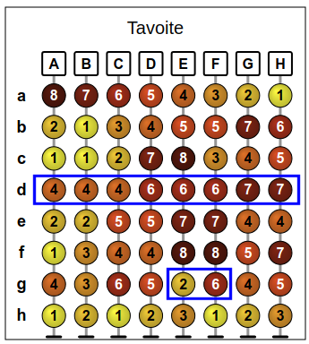

Ratkaisu
Otetaan lähtökohdaksi ehdotus, että kannattaa keskittyä tavoitteen helmiin.
Viimeinen järjestyskerta täytyy suorittaa jollekin tavoitteen suuruusjärjestystä noudattavista riveistä c, e tai f. Valitaan vaikkapa c viimeiseksi järjestettäväksi riviksi.
Edellinen siirtää sarakkeen D viimeiseksi eikä muuta muiden sarakkeiden järjestystä. Sitä aiempien järjestyskertojenpitää asetttaa sarakkeet A, B ja C haluttuun järjestykseen. Rivin e järjestäminen siirtää sarakkeen A alkuun vaikuttamatta muihin sarakkeisiin, joten valitaan se toiseksi viimeiseksi järjestettäväksi riviksi.
Kolmanneksi viimeisen (joka samalla osoittautuu ensimmäiseksi) järjestyskerran pitää asettaa sarakkeet B ja C oikeaan järjestykseen. Tämä onnistuu valitsemalla ensimmäiseksi järjestettäväksi riviksi rivi f.
Kokonainen ratkaisu saadaan siis järjestämällä ensin rivi f, sitten b ja lopuksi c.
Tähän on muitakin mahdollisia ratkaisuja, kuten esim. rivien b, f ja e, tai rivien d, c ja f, tai rivien e, c ja f järjestäminen.
Viimeinen järjestyskerta täytyy suorittaa jommalle kummalle tavoitteen suuruusjärjestystä noudattavista riveistä c tai e. Valitaan vaikkapa c viimeiseksi järjestettäväksi riviksi.
Tämä siirtää sarakkeen A ensimmäiseksi, ja lisäksi varmistaa, että sarakkeet B ja C ovat ennen sarakkeita D, E ja F. Viimeksimainittujen tarkempi järjestys riippuu edeltävistä järjestyskerroista. Asetetaan seuraavaksi sarakkeet B ja C oikeaan keskinäiseen järjestykseen valitsemalla a toiseksi viimeiseksi järjestettäväksi riviksi.
Voimme todeta, että rivin a järjestäminen asettaa myös sarakkeet E ja F oikeaan keskinäisen järjestykseen. Tarkemmin ottaen nyt ainoa väärässä järjestyksessä oleva sarake on D, jonka rivin a järjestäminen siirtää sarakkeen F oikealle puolelle. Tämä voidaan korjata lisäämällä rivin a järjestämiskerran perään (uudeksi toiseksi viimeiseksi järjestämiskerraksi) sellaisen rivin järjestäminen, joka siirtää sarakkeen D oikeaan paikkaan sotkematta muita sarakkeita. Rivin e järjestäminen tuottaa halutun vaikutuksen.
Kokonainen ratkaisu saadaan siis järjestämällä ensin rivi a, sitten e ja lopuksi c.
Toinen mahdollinen ratkaisu on järjestää rivit a, c ja e.
Viimeinen järjestyskerta täytyy suorittaa tavoitteen ainoalle suuruusjärjestystä noudattavalle riville d.
Rivin d järjestäminen asettaa kolme ryhmää järjestykseen: ensin A, B ja C, sitten D, E ja F, ja lopuksi G ja H. Kunkin ryhmän sisäinen järjestys määräytyy aiempien järjestyskertojen perusteella. Valitaan siis aiemmat järjestyskerrat siten, että kunkin ryhmäm sisäiset sarakkeet tulevat järjestetyiksi oikein.
Aloitetaan sarakkeiden A, B ja C ryhmästä. Ainoa niiden järjestyksen yksikäsitteisesti oikein määrittävä rivi on f; valitaan siis f toiseksi viimeisen järjestyskerran riviksi. Huomaamme, että tämä järjestyskerta asettaa samalla myös sarakkeiden G ja H ryhmän järjestykseen, ja lisäksi sarakkeiden D, E ja F ryhmässä D tulee oikeaan järjestykseen.
Jäljellä on enää sarakkeiden D, E ja F ryhmän sarakkeiden E ja F järjestäminen keskenään oikein. Rivi g on ainoa, jonka järjestäminen asettaa sarakkeen E ennen saraketta F.

Kokonainen ratkaisu saadaan siis järjestämällä ensin rivi g, sitten f ja lopuksi d.
Tämä on tietojenkäsittelyä!
Tehtävässä suoritetaan tietojenkäsittelyssä varsin yleistä toimenpidettä: lajittelua. Lajittelussa pitää järjestää jokin alkiojoukko tietyn vertailusäännön mukaiseen järjestykseen. Kaikkein yksinkertaisin esimerkki lienee jonkin lukujoukon järjestäminen kasvavaan järjestykseen. Lajiteltavat alkiot sekä vertailusääntö voivat toki olla monimutkaisempiakin. Alkiot esimerkiksi voisivat kuvata henkilötietoja, jotka halutaan lajitella vaikkapa ensisijaisesti sukunimen, toissijaisesti (jos sukunimet keskenään samat) etunimen ja kolmanneksi (jos sekä suku- että etunimi olivat samat) iän mukaiseen järjestykseen. Koska lajittelu on hyvin keskeinen toimenpide monissa tietojenkäsittelyn sovelluksissa, on olemassa laaja kirjo erilaisia lajittelualgoritmeja.
Lajittelualgoritmia sanotaan vakaaksi, jos se säilyttää lajiteltavan alkiojoukon keskenään samanarvoisiksi katsotut alkiot niiden lajittelua edeltäneessä keskinäisessä järjestyksessä. Tämän ansiosta vakaalla lajitelualgoritmilla on mahdollista järjestää alkiojoukko asteittain tarkempaan ja tarkempaan järjestykseen eri kriteerien perusteella. Esimerkiksi jos tarkastellaan yllä kuvattua henkilötietojen lajittelua, voisi tiedot lajitella vakaalla lajittelualgoritmilla kolmessa vaiheessa: ensin iän, sitten etunimen ja lopuksi sukunimen perusteella (voit pohtia, miksi lajittelut tehtäisiin tässä järjestyksessä). Tämä toimii oikein nimenomaan vakaalla lajittelualgoritmilla.
Tehtävässä käytetty rivien lajittelutapa toimi vakaasti, ja ratkaisuissa pitikin hyödyntää tätä ominaisuutta. Kun jonkin rivin mukaan lajittelu asetti sarakkeet tiettyyn järjestykseen, pysyivät nämä sarakkeet keskenään samassa järjestyksessä myöhemminkin, jos ne olivat myöhempien järjestyskertojen käyttämissä riveissä joko samassa järjestyksessä tai vähintään keskenään samanarvoisia.
Katso lisää esim. https://fi.wikipedia.org/wiki/Lajittelualgoritmi.